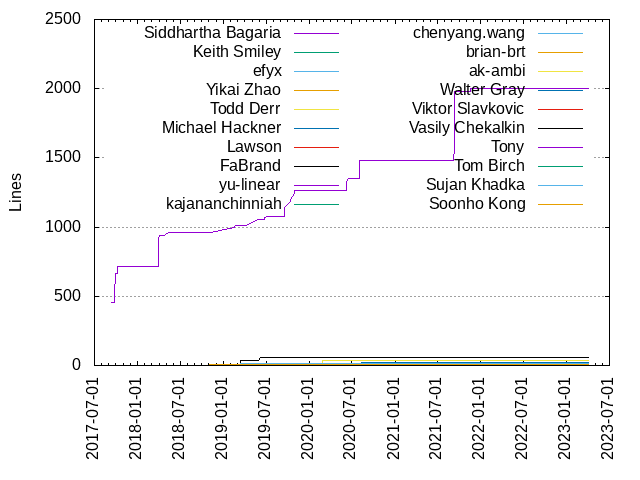
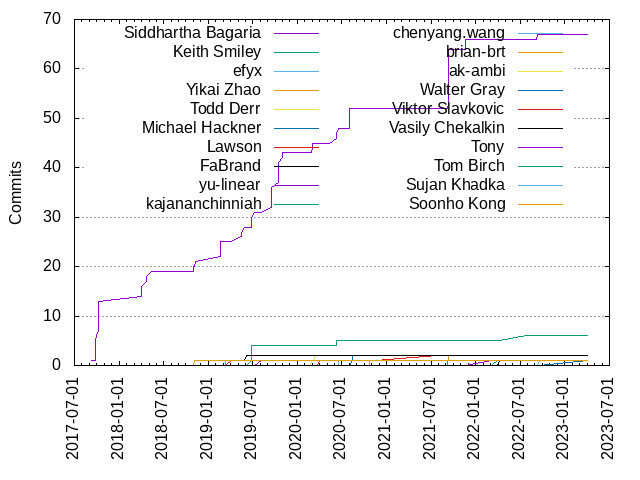

Authors
| Author | Commits (%) | + lines | - lines | First commit | Last commit | Age | Active days | # by commits |
|---|
| Siddhartha Bagaria | 67 (58.26%) | 2005 | 664 | 2017-09-09 | 2022-09-08 | 1825 days, 11:06:55 | 29 | 1 |
| Keith Smiley | 6 (5.22%) | 19 | 12 | 2019-06-24 | 2022-07-26 | 1128 days, 4:31:16 | 4 | 2 |
| efyx | 2 (1.74%) | 9 | 6 | 2020-06-17 | 2020-12-01 | 166 days, 17:52:37 | 2 | 3 |
| Yikai Zhao | 2 (1.74%) | 10 | 3 | 2021-09-07 | 2021-09-08 | 1 day, 2:54:07 | 2 | 4 |
| Todd Derr | 2 (1.74%) | 7 | 7 | 2020-02-27 | 2020-03-17 | 19 days, 4:52:08 | 2 | 5 |
| Michael Hackner | 2 (1.74%) | 21 | 22 | 2020-08-12 | 2020-08-12 | 0:06:08 | 1 | 6 |
| Lawson | 2 (1.74%) | 9 | 1 | 2020-04-03 | 2021-07-26 | 478 days, 17:34:35 | 2 | 7 |
| FaBrand | 2 (1.74%) | 55 | 30 | 2019-03-12 | 2019-06-07 | 86 days, 16:54:10 | 2 | 8 |
| yu-linear | 1 (0.87%) | 1 | 1 | 2022-03-07 | 2022-03-07 | 0:00:00 | 1 | 9 |
| kajananchinniah | 1 (0.87%) | 1 | 0 | 2022-04-01 | 2022-04-01 | 0:00:00 | 1 | 10 |
| chenyang.wang | 1 (0.87%) | 10 | 2 | 2022-09-19 | 2022-09-19 | 0:00:00 | 1 | 11 |
| brian-brt | 1 (0.87%) | 6 | 1 | 2020-10-23 | 2020-10-23 | 0:00:00 | 1 | 12 |
| ak-ambi | 1 (0.87%) | 34 | 6 | 2020-02-07 | 2020-02-07 | 0:00:00 | 1 | 13 |
| Walter Gray | 1 (0.87%) | 14 | 5 | 2023-04-03 | 2023-04-03 | 0:00:00 | 1 | 14 |
| Viktor Slavkovic | 1 (0.87%) | 3 | 2 | 2019-04-05 | 2019-04-05 | 0:00:00 | 1 | 15 |
| Vasily Chekalkin | 1 (0.87%) | 2 | 2 | 2022-04-05 | 2022-04-05 | 0:00:00 | 1 | 16 |
| Tony | 1 (0.87%) | 4 | 7 | 2019-08-04 | 2019-08-04 | 0:00:00 | 1 | 17 |
| Tom Birch | 1 (0.87%) | 1 | 1 | 2021-09-07 | 2021-09-07 | 0:00:00 | 1 | 18 |
| Sujan Khadka | 1 (0.87%) | 16 | 3 | 2019-03-12 | 2019-03-12 | 0:00:00 | 1 | 19 |
| Soonho Kong | 1 (0.87%) | 4 | 5 | 2018-11-03 | 2018-11-03 | 0:00:00 | 1 | 20 |
These didn't make it to the top: Seth Greenstein, Robin Nabel, Paul Cody Johnston, Matzkowsky, Lizan Zhou, Lixun Lin, Josh Faust, JKurland, Indragie Karunaratne, Igor Nazarenko, Hallot, Greg Miller, Ezekiel Warren, Duco van Amstel, Christopher Sauer, Christopher Crawford, Cameron Ackerman, Alan Eneev
Only top 20 authors shown
Only top 20 authors shown
| Month | Author | Commits (%) | Next top 5 | Number of authors |
|---|
| 2023-04 | Walter Gray | 1 (100.00% of 1) | | 1 |
| 2022-09 | chenyang.wang | 1 (33.33% of 3) | Siddhartha Bagaria, Hallot | 3 |
| 2022-07 | Keith Smiley | 1 (100.00% of 1) | | 1 |
| 2022-04 | kajananchinniah | 1 (50.00% of 2) | Vasily Chekalkin | 2 |
| 2022-03 | yu-linear | 1 (100.00% of 1) | | 1 |
| 2021-11 | Siddhartha Bagaria | 2 (66.67% of 3) | Christopher Sauer | 2 |
| 2021-09 | Siddhartha Bagaria | 12 (63.16% of 19) | Yikai Zhao, Tom Birch, Paul Cody Johnston, Lixun Lin, JKurland | 7 |
| 2021-07 | Lawson | 1 (100.00% of 1) | | 1 |
| 2020-12 | efyx | 1 (100.00% of 1) | | 1 |
| 2020-11 | Igor Nazarenko | 1 (100.00% of 1) | | 1 |
| 2020-10 | brian-brt | 1 (50.00% of 2) | Ezekiel Warren | 2 |
| 2020-08 | Siddhartha Bagaria | 4 (66.67% of 6) | Michael Hackner | 2 |
| 2020-07 | Lizan Zhou | 1 (100.00% of 1) | | 1 |
| 2020-06 | Siddhartha Bagaria | 3 (60.00% of 5) | efyx, Keith Smiley | 3 |
| 2020-05 | Christopher Crawford | 1 (100.00% of 1) | | 1 |
| 2020-04 | Lawson | 1 (100.00% of 1) | | 1 |
| 2020-03 | Todd Derr | 1 (100.00% of 1) | | 1 |
| 2020-02 | Siddhartha Bagaria | 2 (40.00% of 5) | ak-ambi, Todd Derr, Alan Eneev | 4 |
| 2019-11 | Robin Nabel | 1 (100.00% of 1) | | 1 |
| 2019-10 | Siddhartha Bagaria | 7 (87.50% of 8) | Greg Miller | 2 |
| 2019-09 | Siddhartha Bagaria | 5 (100.00% of 5) | | 1 |
| 2019-08 | Tony | 1 (100.00% of 1) | | 1 |
| 2019-07 | Siddhartha Bagaria | 1 (100.00% of 1) | | 1 |
| 2019-06 | Keith Smiley | 4 (57.14% of 7) | Siddhartha Bagaria, FaBrand | 3 |
| 2019-05 | Siddhartha Bagaria | 3 (100.00% of 3) | | 1 |
| 2019-04 | Viktor Slavkovic | 1 (100.00% of 1) | | 1 |
| 2019-03 | Sujan Khadka | 1 (33.33% of 3) | FaBrand, Cameron Ackerman | 3 |
| 2019-02 | Siddhartha Bagaria | 4 (66.67% of 6) | Josh Faust, Duco van Amstel | 3 |
| 2018-11 | Siddhartha Bagaria | 2 (50.00% of 4) | Soonho Kong, Seth Greenstein | 3 |
| 2018-05 | Siddhartha Bagaria | 1 (100.00% of 1) | | 1 |
| 2018-04 | Siddhartha Bagaria | 5 (100.00% of 5) | | 1 |
| 2017-10 | Siddhartha Bagaria | 7 (100.00% of 7) | | 1 |
| 2017-09 | Siddhartha Bagaria | 6 (85.71% of 7) | Matzkowsky | 2 |
| Year | Author | Commits (%) | Next top 5 | Number of authors |
|---|
| 2023 | Walter Gray | 1 (100.00% of 1) | | 1 |
| 2022 | yu-linear | 1 (14.29% of 7) | kajananchinniah, chenyang.wang, Vasily Chekalkin, Siddhartha Bagaria, Keith Smiley | 7 |
| 2021 | Siddhartha Bagaria | 14 (60.87% of 23) | Yikai Zhao, Tom Birch, Paul Cody Johnston, Lixun Lin, Lawson | 9 |
| 2020 | Siddhartha Bagaria | 9 (37.50% of 24) | efyx, Todd Derr, Michael Hackner, brian-brt, ak-ambi | 13 |
| 2019 | Siddhartha Bagaria | 22 (61.11% of 36) | Keith Smiley, FaBrand, Viktor Slavkovic, Tony, Sujan Khadka | 11 |
| 2018 | Siddhartha Bagaria | 8 (80.00% of 10) | Soonho Kong, Seth Greenstein | 3 |
| 2017 | Siddhartha Bagaria | 13 (92.86% of 14) | Matzkowsky | 2 |
| Domains | Total (%) |
|---|
| users.noreply.github.com | 40 (34.78%) |
|---|
| grailbio.com | 39 (33.91%) |
|---|
| gmail.com | 19 (16.52%) |
|---|
| blahgeek.com | 2 (1.74%) |
|---|
| zoho.com | 1 (0.87%) |
|---|
| ucdavis.edu | 1 (0.87%) |
|---|
| tri.global | 1 (0.87%) |
|---|
| torch3d.com | 1 (0.87%) |
|---|
| tony.wiki | 1 (0.87%) |
|---|
| tetrate.io | 1 (0.87%) |
|---|